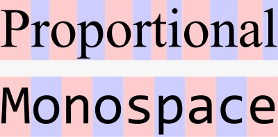
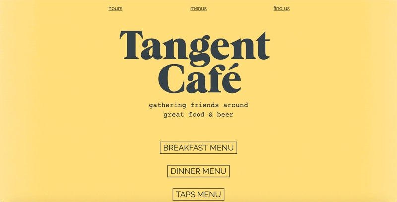

The above are examples of Monospace fonts
try loading and randomizing!
What exactly are Monospace fonts?
Monospace fonts are close relatives to the typewriter. They get their name from the amount of space each character uses.
As you will see below, you will be able to tell the difference between the spaces from the words "Proportional" and "Monospace".
Each letter in the word "Proportional" uses the amount of space it needs and no more to complete the word so more letters can be fit into one space. In "Monospace" however, each letter uses the same amount of space as each other, making it look very digital.
Just to save you the time, "Proportional" is a 12-letter word and it uses the same amount of space as the word "Monospace" which is a 9-letter word using the Monospace font.
In design terms, it is tricky to use appropriately. If you want to use this font, be sure to use it sparingly or most importantly, correctly.
The words "gathering friends around great food & beer" above are written in a Monospace font, they use it sparingly here for a pleasant aesthetic effect.
As a closing, Monospace has its uses in designing. However, don't dedicate your entire page to this font as it may not look aesthetically pleasing. Well, unless you're making a website that looks like a software programme.